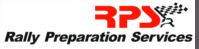

If you want to donate to our charities then visit our WillWeMakeIt profile. Please give as much as you can. If you want to see your company logo on our car then read on.
If you'd like to sponsor us and see your company logo on our car just drop us an email and we'll sort something out.
|  |
Simon Ayris and his Rally Preparation Services have transformed many classic cars into off road ready cars for rallies such as the Peking to Paris rally. Now he's working his magic on our car. His wealth of knowledge and experience will be key in getting us and our car to Mongolia. |
Sohonet employ Patrick as a Network Engineer. Sohonet create network solutions for media companies which involves moving large amounts of data around the world reliably at very high speeds. Quite ironic that sending one of their employees to Mongolia in an Allegro could be one of the slowest and least reliable ways to do that work! Thank you to everyone for their support and to the Directors for a very generous charity donation. |
| Having met with some of the members and people who run the Allegro Club we are now a lot better equipped with spare parts and the knowledge of what the weak points of the car are. Thank you to all the Club Members who donated when we brought the car up to Birmingham for the Allegro 35th birthday. |
Special thanks go to the following. Without you it would have been impossible (or at least significantly harder)
dave.caretcake.com - for leting us plagarise your website so severly!
Andy and Neil for your help fixing up and towing Barney.